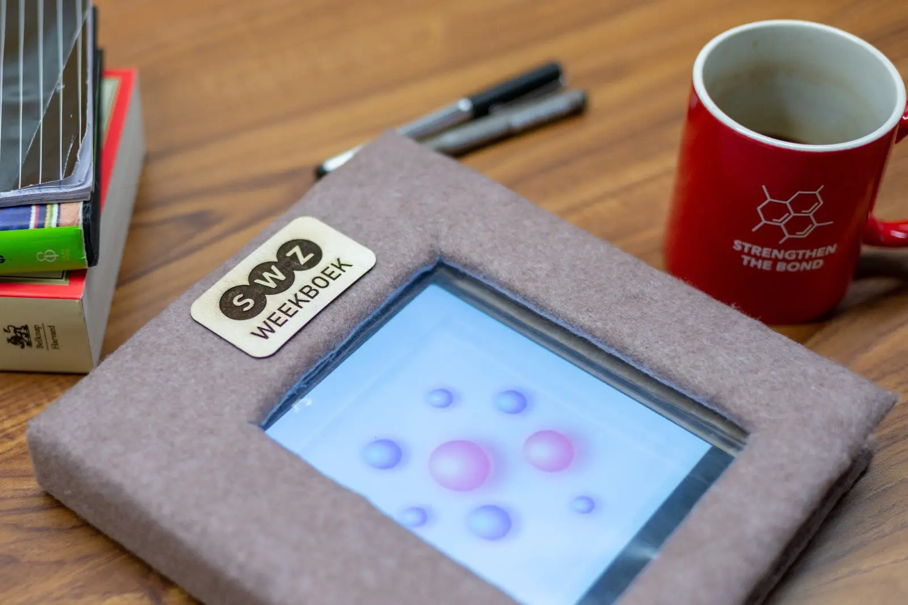
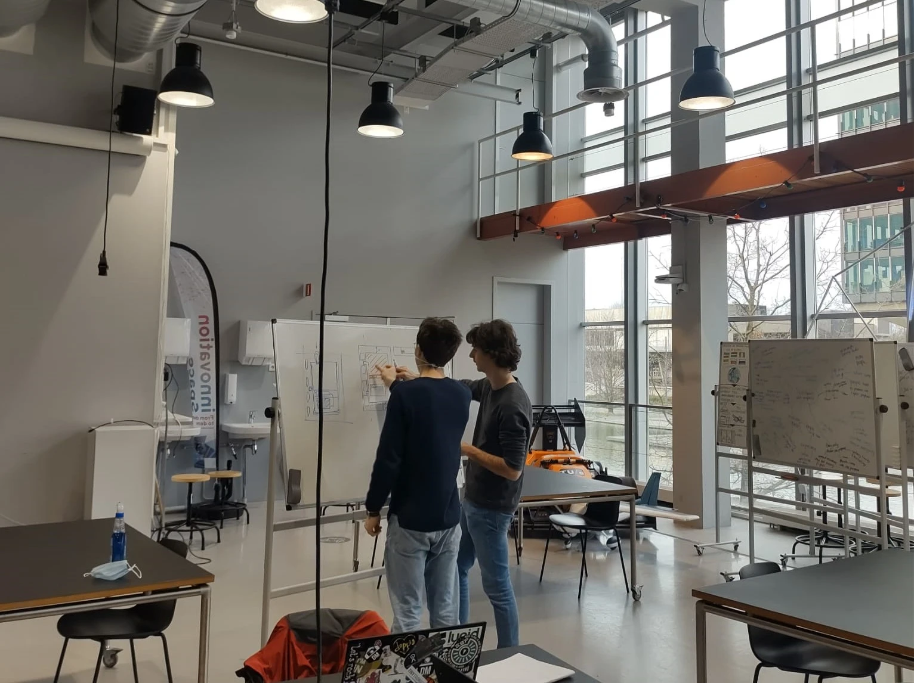

Aesthetics of interaction
2021
University of technology Eindhoven
University of technology Eindhoven
Summary
Aesthetics of interaction is a course taught at the University of Eindhoven. With the goal to
ideate using low fidelity prototypes to get a better understanding of the interactions the user
experiences with a product.
Roles
• User research
• electronic realization
• physical realization
• electronic realization
• physical realization
Final version of Weekboek
Picture of the final version of Weekboek at the presentation moment for the client, with a
functional app displayed on a tablet but also showing a tactile user experience with the physical
pages which also change the day on the dayplanner


This is just a sidequest you had to hide text as easter eggs which looks like a line